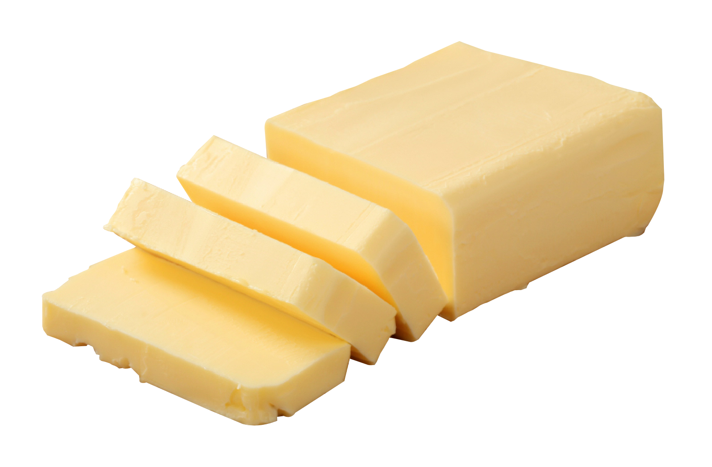

~red velvet cake~

~ingredients~
flour
sugar
coco powder

butter

eggs
flour
sugar
coco powder

butter
eggs
Step 1: Preheat oven to 350°F (175°C).
Step 2: Mix dry ingredients together in a large bowl, making sure to sift the flour and coco powder.
Step 3: Mix the wet ingredients together. Melt the butter in the microwave in increments of 30 seconds, and add to eggs once fully melted.
Step 4: Add the wet and dry ingredients together. Mix until rich and creamy.
Step 5: Pour the cake batter into a greased pan and let it bake for 30-35 minutes. Check if fully baked by inserting a toothpick into the center of the cake; if the toothpick comes out dry, the cake is done!
Step 6: Let the cake cool down in the pan for at least 15 minutes.
Step 7: Frost the cake with whichever frosting and decorations you like! For this recipe, I recommend a cream cheese frosting for a traditional red velvet cake.
Step 8: Enjoy!